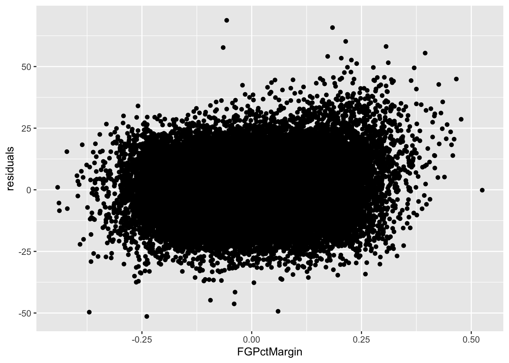
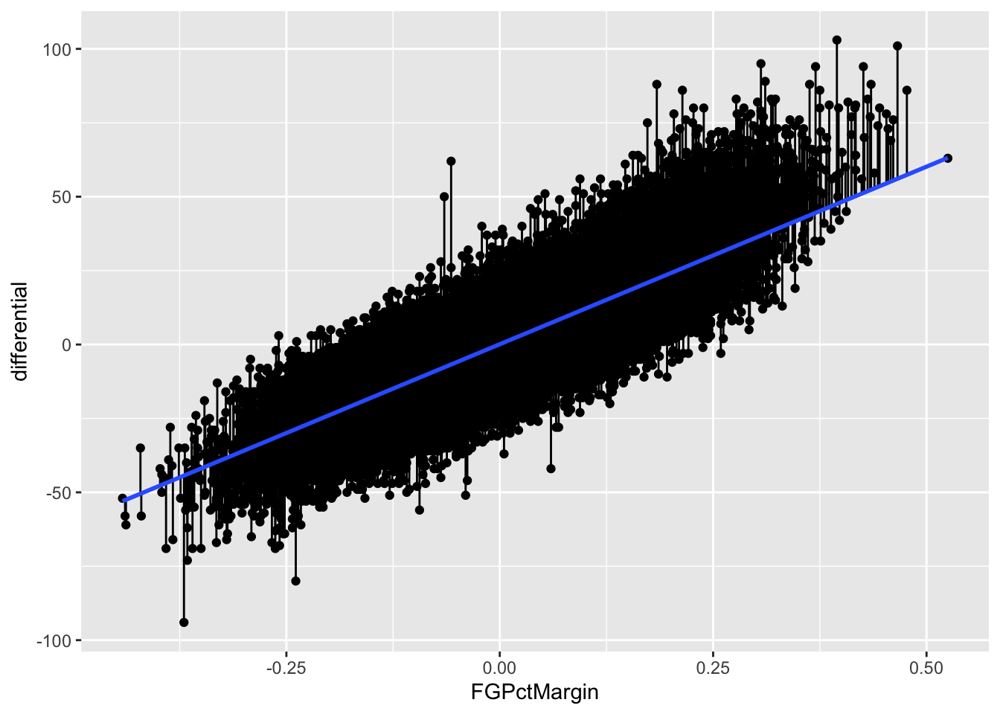
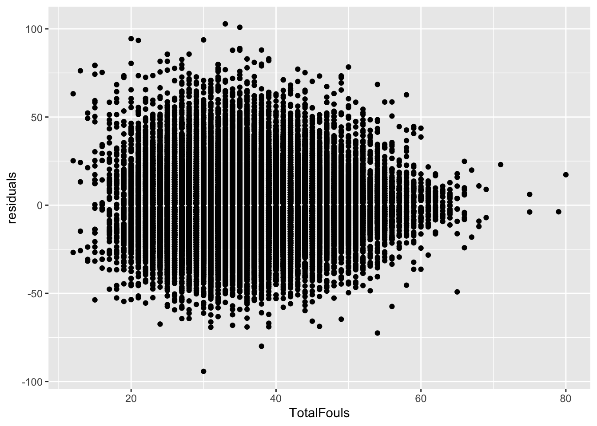
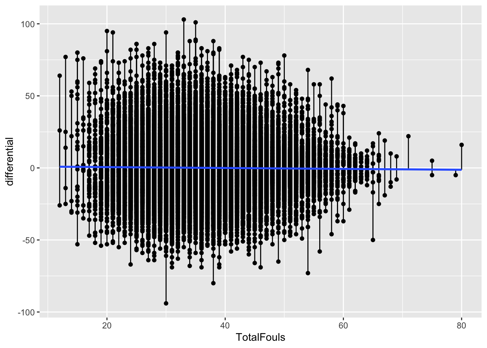

library(tidyverse)11 Residuals
When looking at a linear model of your data, there’s a measure you need to be aware of called residuals. The residual is the distance between what the model predicted and what the real outcome is. Take our model at the end of the correlation and regression chapter. Our model predicted Maryland’s women soccer should have outscored Temple by 1.0375 goals last month. The match was a 1-1 draw. So our residual is -1.0375.
Residuals can tell you several things, but most important is if a linear model the right model for your data. If the residuals appear to be random, then a linear model is appropriate. If they have a pattern, it means something else is going on in your data and a linear model isn’t appropriate.
Residuals can also tell you who is underperforming and overperforming the model. And the more robust the model – the better your r-squared value is – the more meaningful that label of under or overperforming is.
Let’s go back to our model for college basketball. For our predictor, let’s use Net FG Percentage - the difference between the two teams’ shooting success.
For this walkthrough:
Then load the tidyverse.
logs <- read_csv("data/cbblogs1521.csv")Rows: 64866 Columns: 48
── Column specification ────────────────────────────────────────────────────────
Delimiter: ","
chr (8): Season, TeamFull, Opponent, HomeAway, W_L, URL, Conference, Team
dbl (39): Game, TeamScore, OpponentScore, TeamFG, TeamFGA, TeamFGPCT, Team3...
date (1): Date
ℹ Use `spec()` to retrieve the full column specification for this data.
ℹ Specify the column types or set `show_col_types = FALSE` to quiet this message.First, let’s make the columns we’ll need.
residualmodel <- logs %>% mutate(differential = TeamScore - OpponentScore, FGPctMargin = TeamFGPCT - OpponentFGPCT)Now let’s create our model.
fit <- lm(differential ~ FGPctMargin, data = residualmodel)
summary(fit)
Call:
lm(formula = differential ~ FGPctMargin, data = residualmodel)
Residuals:
Min 1Q Median 3Q Max
-51.388 -6.170 -0.212 5.905 68.751
Coefficients:
Estimate Std. Error t value Pr(>|t|)
(Intercept) 0.09515 0.03718 2.559 0.0105 *
FGPctMargin 120.11570 0.33371 359.940 <2e-16 ***
---
Signif. codes: 0 '***' 0.001 '**' 0.01 '*' 0.05 '.' 0.1 ' ' 1
Residual standard error: 9.47 on 64861 degrees of freedom
(3 observations deleted due to missingness)
Multiple R-squared: 0.6664, Adjusted R-squared: 0.6664
F-statistic: 1.296e+05 on 1 and 64861 DF, p-value: < 2.2e-16We’ve seen this output before, but let’s review because if you are using scatterplots to make a point, you should do this. First, note the Min and Max residual at the top. A team has underperformed the model by 51 points (!), and a team has overperformed it by 68 points (!!). The median residual, where half are above and half are below, is just slightly below the fit line. Close here is good.
Next: Look at the Adjusted R-squared value. What that says is that 66 percent of a team’s scoring differential can be predicted by their FG percentage margin.
Last: Look at the p-value. We are looking for a p-value smaller than .05. At .05, we can say that our correlation didn’t happen at random. And, in this case, it REALLY didn’t happen at random. But if you know a little bit about basketball, it doesn’t surprise you that the more you shoot better than your opponent, the more you win by. It’s an intuitive result.
What we want to do now is look at those residuals. We want to add them to our individual game records. We can do that by creating two new fields – predicted and residuals – to our dataframe like this:
residualmodel <- residualmodel %>% mutate(predicted = predict(fit), residuals = residuals(fit))Error in `mutate()`:
! Problem while computing `predicted = predict(fit)`.
✖ `predicted` must be size 64866 or 1, not 64863.Uh, oh. What’s going on here? When you get a message like this, where R is complaining about the size of the data, it most likely means that your model is using some columns that have NA values. In this case, the number of columns looks small - perhaps 3 - so let’s just get rid of those rows by using the calculated columns from our model:
residualmodel <- residualmodel %>% filter(!is.na(FGPctMargin))Now we can try re-running the code to add the predicted and residuals columns:
residualmodel <- residualmodel %>% mutate(predicted = predict(fit), residuals = residuals(fit))Now we can sort our data by those residuals. Sorting in descending order gives us the games where teams overperformed the model. To make it easier to read, I’m going to use select to give us just the columns we need to see and limit our results to Big Ten teams.
residualmodel %>% filter(Conference == 'Big Ten') %>% arrange(desc(residuals)) %>% select(Date, Team, Opponent, W_L, differential, FGPctMargin, predicted, residuals)# A tibble: 2,037 × 8
Date Team Opponent W_L diffe…¹ FGPctM…² predi…³ resid…⁴
<date> <chr> <chr> <chr> <dbl> <dbl> <dbl> <dbl>
1 2020-12-15 Northwestern Quincy W 52 0.089 10.8 41.2
2 2020-11-25 Nebraska McNeese State W 47 0.118 14.3 32.7
3 2020-11-25 Illinois North Carolin… W 62 0.243 29.3 32.7
4 2017-11-22 Illinois Augustana (IL) W 34 0.0140 1.78 32.2
5 2017-12-13 Illinois Longwood W 47 0.126 15.2 31.8
6 2017-11-10 Illinois Southern W 47 0.135 16.3 30.7
7 2017-12-11 Northwestern Chicago State W 65 0.291 35.0 30.0
8 2018-11-08 Northwestern New Orleans W 30 0.00900 1.18 28.8
9 2020-01-21 Maryland Northwestern W 11 -0.148 -17.7 28.7
10 2019-11-16 Purdue Chicago State W 44 0.133 16.1 27.9
# … with 2,027 more rows, and abbreviated variable names ¹differential,
# ²FGPctMargin, ³predicted, ⁴residualsSo looking at this table, what you see here are the teams who scored more than their FG percentage margin would indicate. One of them should jump off the page at you.
Look at that Maryland-Northwestern game from 2020. The Wildcats shot better than the Terps, but the model predicted Northwestern would win by 17 points. Instead, Maryland won by 11!
But, before we can bestow any validity on this model, we need to see if this linear model is appropriate. We’ve done that some looking at our p-values and R-squared values. But one more check is to look at the residuals themselves. We do that by plotting the residuals with the predictor. We’ll get into plotting soon, but for now just seeing it is enough.

The lack of a shape here – the seemingly random nature – is a good sign that a linear model works for our data. If there was a pattern, that would indicate something else was going on in our data and we needed a different model.
Another way to view your residuals is by connecting the predicted value with the actual value.
`geom_smooth()` using formula 'y ~ x'
The blue line here separates underperformers from overperformers.
11.1 Fouls
Now let’s look at it where it doesn’t work as well: the total number of fouls
fouls <- logs %>%
mutate(
differential = TeamScore - OpponentScore,
TotalFouls = TeamPersonalFouls+OpponentPersonalFouls
)pfit <- lm(differential ~ TotalFouls, data = fouls)
summary(pfit)
Call:
lm(formula = differential ~ TotalFouls, data = fouls)
Residuals:
Min 1Q Median 3Q Max
-94.254 -10.285 -1.254 9.776 102.838
Coefficients:
Estimate Std. Error t value Pr(>|t|)
(Intercept) 1.176653 0.327499 3.593 0.000327 ***
TotalFouls -0.030745 0.008802 -3.493 0.000478 ***
---
Signif. codes: 0 '***' 0.001 '**' 0.01 '*' 0.05 '.' 0.1 ' ' 1
Residual standard error: 16.39 on 64861 degrees of freedom
(3 observations deleted due to missingness)
Multiple R-squared: 0.0001881, Adjusted R-squared: 0.0001726
F-statistic: 12.2 on 1 and 64861 DF, p-value: 0.0004783So from top to bottom:
- Our min and max go from -94 to positive 102
- Our adjusted R-squared is … 0.0001726 Not much at all.
- Our p-value is … 0.0004783, which is less than than .05, so that’s something.
So what we can say about this model is that it’s statistically significant, but doesn’t really explain much. It’s not meaningless, but on its own the total number of fouls doesn’t go very far in explaining the point differential. Normally, we’d stop right here – why bother going forward with a predictive model that isn’t terribly predictive? But let’s do it anyway. Oh, and see that “(3 observations deleted due to missingness)” bit? That means we need to lose some incomplete data again.
fouls <- fouls %>% filter(!is.na(TotalFouls))
fouls$predicted <- predict(pfit)
fouls$residuals <- residuals(pfit)fouls %>% arrange(desc(residuals)) %>% select(Team, Opponent, W_L, TeamScore, OpponentScore, TotalFouls, residuals)# A tibble: 64,863 × 7
Team Opponent W_L TeamS…¹ Oppon…² Total…³ resid…⁴
<chr> <chr> <chr> <dbl> <dbl> <dbl> <dbl>
1 McNeese State Dallas Chris… W 140 37 33 103.
2 Appalachian State Toccoa Falls W 135 34 35 101.
3 Grambling Ecclesia W 147 52 20 94.4
4 Utah Mississippi … W 143 49 30 93.7
5 Merrimack Lesley W 110 16 21 93.5
6 Lamar Howard Payne W 121 32 35 88.9
7 Georgia Southern Carver Colle… W 139 51 38 88.0
8 Youngstown State Franciscan W 134 46 35 87.9
9 Maryland-Baltimore County Valley Forge W 134 46 34 87.9
10 Tennessee-Martin Champion Chr… W 115 29 28 85.7
# … with 64,853 more rows, and abbreviated variable names ¹TeamScore,
# ²OpponentScore, ³TotalFouls, ⁴residualsFirst, note all of the biggest misses here are all blowout games. The worst games of the season, the worst being McNeese State vs. Dallas Christian. The model missed that differential by … 102 points. The margin of victory? 103 points. In other words, this model is not great! But let’s look at it anyway.

Well … it actually says that a linear model is appropriate. Which an important lesson – just because your residual plot says a linear model works here, that doesn’t say your linear model is good. There are other measures for that, and you need to use them.
Here’s the segment plot of residuals – you’ll see some really long lines. That’s a bad sign. Another bad sign? A flat fit line. It means there’s no relationship between these two things. Which we already know.
`geom_smooth()` using formula 'y ~ x'